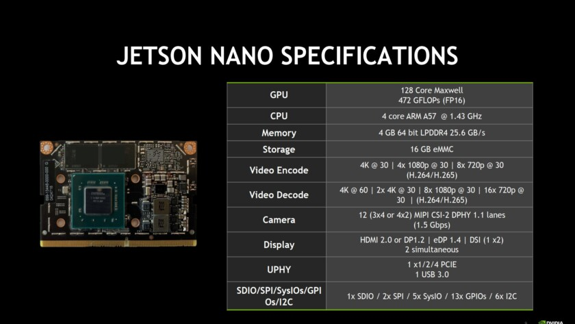

Pedro de la Penã - Jetson Nano GPU¶
- Aluno: Pedro de la Penã
- Curso: Engenharia da Computação
- Semestre: 9
- Contato:
- Link tutorial oficial: https://github.com/pedrodelapena/TutorialEmbarcados
- Ano: 2019
Hardware utilizado no tutorial
- Jetson Nano
- Câmera raspberry pi
Neste projeto iremos utilizar uma placa Jetson Nano para comparar a diferença no desempenho de um código sendo executado em CPU VS GPU.
Pr√© Requisitos¶
Para seguir este tutorial, é necessário:
- Conexão com a internet;
- Hardware: Jetson Nano;
- Hardware: SD Card 16 GB OU 32 GB (preferível); - Hardware: Teclado e Mouse USB;
- Hardware: Monitor com entrada HDMI;
- Hardware: Câmera Raspberry Pi 2.1 OU Câmera USB;
- Software: Baixar imagem https://developer.nvidia.com/jetson-nano-sd-card-image-r3221
Arquitetura da placa Jetson Nano¶
A placa Jetson Nano possui uma GPU integrada além de sua CPU ARM Cortex-A57 Quad-Core, o que a faz ser muito utilizada em aplicações de processamento de imagens e também em Machine Learning com o uso de redes neurais. A lista completa de seus componentes e especificações está a seguir: 
NVIDIA Tegra X1 SoC (GPU)¶
A Jetson Nano possui um System On a Chip (SoC) Tegra X1 Maxell, frequentemente encontrado em tablets que são baseados no sistema Android. Este SoC possibilita o uso softwares como OpenGL, CUDA e também DirectX. Com um clock máximo de até 1000 MHz, a GPU oferece 256 shader-cores e é capaz de codificar vídeos em 30fps e decodificar em 60fps.
Gravando um SDCard e inicializando o Linux¶
Configurando o sistema operacional no SD card¶
Após realizar o download da imagem, conecte o SD card em um adaptador e então no seu computador. Agora é preciso extrair a imagem e copiá-la para o driver de maneira que o sistema operacional funcione. Para realizar o processo utilizando utilizando uma interface gráfica, faça o dowload do Etcher. O processo de flashing é um pouco demorado, levando cerca de 10-15 minutos. Você pode meditar um pouco ou então pode ir dar uma volta e tomar um café!

Caso você prefira realizar o processo de forma mais raiz, você também o pode fazer pela linha de comando. Para isto, descubra o nome e localização do seu flash drive com dmesg | tail. Após encontrar o drive, extraia o arquivo para o SD card com o comando:
$ /usr/bin/unzip -p ~/[LOCAL_DE_DOWNLOAD]/jetson_nano_devkit_sd_card.zip
$ sudo /bin/dd of=/dev/sd[NOME_DO_DRIVE] bs=1M status=progress
Inserindo o SD card na placa Jetson Nano¶
A entrada do cartão de memória não é muito visível para aqueles que estão tendo o primeiro contato com a placa. Aqui há uma imagem para auxilia-lo(a) a encontrar a entrada do cartão:

Primeiro boot¶
Com o cartão de memória já inserido, é preciso conectar os cabos na placa. Não há "botão de ligar ou desligar" na placa, e o boot começa automaticamente quando o cabo de alimentação (supply de 5V (USB) OU fonte) estiver conectado. Além disso, lembre-se que será preciso conexão com a internet para os próximos passos.
Após inserir as configurações de formato de teclado, região e informações 'pessoais' do ambiente Linux, a placa reiniciará e então estará pronta para uso.

Para maior comodidade, recomenda-se que a suspensão automática e screen lock sejam desativadas em All Settings -> Brightness & Lock, dado que alguns downloads e instalações possam demorar um pouco.
Atualizando libs e packages¶
Já que acabamos de configurar o sistema operacional, é necessário executar os comandos sudo apt-get update e sudo apt-get upgrade.
Configurando o ambiente Python¶
Para instalar bibliotecas adicionais, é preciso instalar o pip. Para isto, execude os comandos a seguir:
$ wget https://bootstrap.pypa.io/get-pip.py
$ sudo python3 get-pip.py
Configurando o ambiente CUDA¶
$ wget http://developer.download.nvidia.com/compute/cuda/10.2/Prod/local_installers/cuda_10.2.89_440.33.01_linux.run
$ sudo sh cuda_10.2.89_440.33.01_linux.run
Configurando o Ambiente OpenCV¶
Note
Esse aqui demora... E MUITO! (~4 horas)
Warning
IMPORTANTE! Conecte um cooler à placa e faça questão de utilizar a fonte de alimentação normal em relação à USB para este processo, já que ele demanda MUITA potência e a placa atingir altas temperaturas, o que pode levar ao seu superaquecimento.
Com o cooler instalado, rode as seguintes linhas de comando para instalar e compilar o OpenCV. E lembrando, é uma looooooonga espera.
$ wget https://github.com/AastaNV/JEP/blob/master/script/install_opencv4.1.1_Jetson.sh
$ sudo sh install_opencv4.1.1_Jetson.sh
$ export PYTHONPATH=/usr/local/python
Após realizada a build, abra um terminal python3 e rode o seguinte código para testar o OpenCV:
import cv2
print(cv2.getBuildInformation())
A partir deste comando, é possivel visualizar se o CUDA OpenCV está configurado, no campo NVIDIA CUDA
Instala√ß√£o Pytorch¶
A biblioteca Pytorch possui funções que tornam possível a utilização da GPU no ambiente Python. Esta biblioteca será utilizada para fazer alguns testes e comparações mais para frente no tutorial.
$ wget https://nvidia.box.com/shared/static/phqe92v26cbhqjohwtvxorrwnmrnfx1o.whl -O torch-1.3.0-cp36-cp36m-linux_aarch64.whl
$ pip3 install numpy torch-1.3.0-cp36-cp36m-linux_aarch64.whl
Caso algum erro de dependência relacionado ao numpy ocorra, reinstale-o.
$ sudo pip uninstall numpy
$ pip3 install numpy --user
CPU vs GPU¶
A diferença no desempenho de certos códigos executados em CPU ou GPU é dada pela quantidade de cálculos em paralelo que cada um dos hardwares consegue realizar. Dependendo da arquitetura dos hardwares, uma GPU pode executar centenas - ou até milhares - de vezes mais instruções por clock em relação à CPU. Por conta disto, GPUs são largamente utilizadas em processos que podem ser amplamente divididos e paralelizados em blocos, como é o caso da multiplicação de matrizes com muitas linhas e colunas. O simples exemplo a seguir deixa evidente a diferença no desempenho.
Código em CPU:
import numpy as np
import time
x = np.random.rand(7000,16)
y = np.random.rand(16, 7000)
start = time.time()
z = np.matmul(x,y)
end = time.time()
print(z)
print("\nElapsed time CPU:",end-start,"seconds")
Código em GPU:
import torch
import time
x = torch.randn(7000,16)
y = torch.randn(16, 7000)
start = time.time()
z = torch.matmul(x, y)
end = time.time()
print(z)
print("\nElapsed time GPU:",end-start,"seconds")
CUDA OpenCV¶
A GPU também é de fundamental uso em outras aplicações como a rederização de vídeos e imagens e também no treinamento de modelos de Machine Learning e redes neurais. Desta forma,a biblioteca OpenCV pode ser utilizada para realizar tais tarefas na GPU.
Instala√ß√£o da Câmera¶
Caso esteja utilizando uma câmera USB, pule esta etapa.
Com a Jetson Nano desligada de todas as fontes de energia e com a câmera Raspberry Pi 2.1 (1.3 não funciona), levante a trava localzada em um dos cantos da placa, forçando-a para cima.

Em seguida, insira o conector da câmera (com "a parte azul voltada para fora") e então pressione a trava novamente para baixo.
Testando a Câmera Raspberry Pi¶
Após conectada, teste a câmera para checar se ela realmente está funcional com a seguinte linha de código no terminal.
$ gst-launch-1.0 nvarguscamerasrc ! 'video/x-raw(memory:NVMM),width=3820, height=2464, framerate=21/1, format=NV12' ! nvvidconv flip-method=0 ! 'video/x-raw,width=960, height=616' ! nvvidconv ! nvegltransform ! nveglglessink -e
Exemplo e compara√ß√£o OpenCV vs OpenCV CUDA¶
O código à seguir foi adaptado do Jetson Nano Hacks, sendo que o original pode ser encontrado neste link. Neste código é testada a diferença de desempenho da CPU em relação à GPU.
import cv2
import time
def gstreamer_pipeline(
capture_width=640,
capture_height=360,
display_width=640,
display_height=360,
framerate=60,
flip_method=0,
):
return (
"nvarguscamerasrc ! "
"video/x-raw(memory:NVMM), "
"width=(int)%d, height=(int)%d, "
"format=(string)NV12, framerate=(fraction)%d/1 ! "
"nvvidconv flip-method=%d ! "
"video/x-raw, width=(int)%d, height=(int)%d, format=(string)BGRx ! "
"videoconvert ! "
"video/x-raw, format=(string)BGR ! appsink"
% (
capture_width,
capture_height,
framerate,
flip_method,
display_width,
display_height,
)
)
def show_camera():
# To flip the image, modify the flip_method parameter (0 and 2 are the most common)
print(gstreamer_pipeline(flip_method=0))
cap = cv2.VideoCapture(gstreamer_pipeline(flip_method=0), cv2.CAP_GSTREAMER)
if cap.isOpened():
window_handle = cv2.namedWindow("CSI Camera", cv2.WINDOW_AUTOSIZE)
# Window
while cv2.getWindowProperty("CSI Camera", 0) >= 0:
ret_val, img = cap.read();
start = time.time()
#Alterar aqui para "c2.cuda.flip()" ou "cv2.flip()"
img2 = cv2.cuda.flip(img, 1)
end = time.time()
print("Elapsed time",end-start)
cv2.imshow("CSI Camera", img2)
keyCode = cv2.waitKey(30) & 0xFF
# Stop the program on the ESC key
if keyCode == 27:
break
cap.release()
cv2.destroyAllWindows()
else:
print("Unable to open camera")
if __name__ == "__main__":
show_camera()
Neste caso, devido ao fato de ser uma simples alteração na imagem como um flip, o programa demora mais para enviar a imagem para a GPU que realizar todo o processo na CPU. Contudo, com mais processos e operações, o ganho de desempenho da GPU fica evidente. Além disso, para descobrir todas as funções do módulo CUDA, abra um terminal Python3 e insira a linha dir(cv2.cuda).